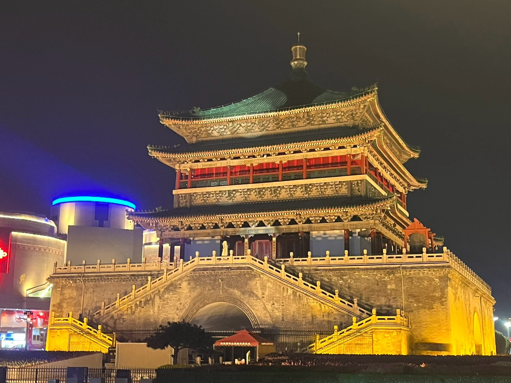
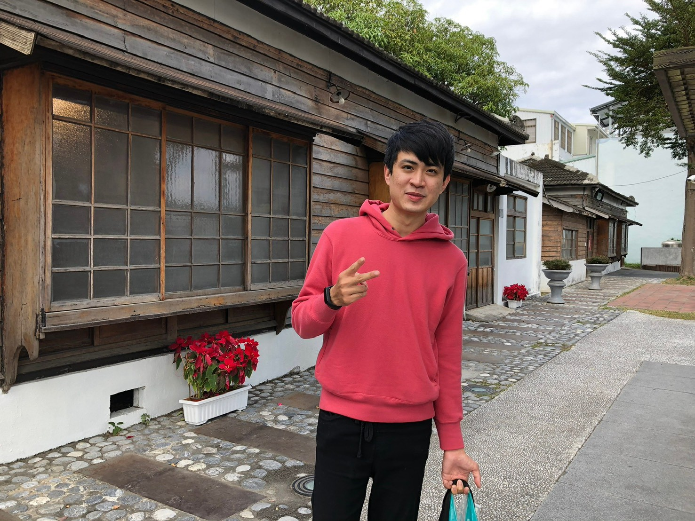
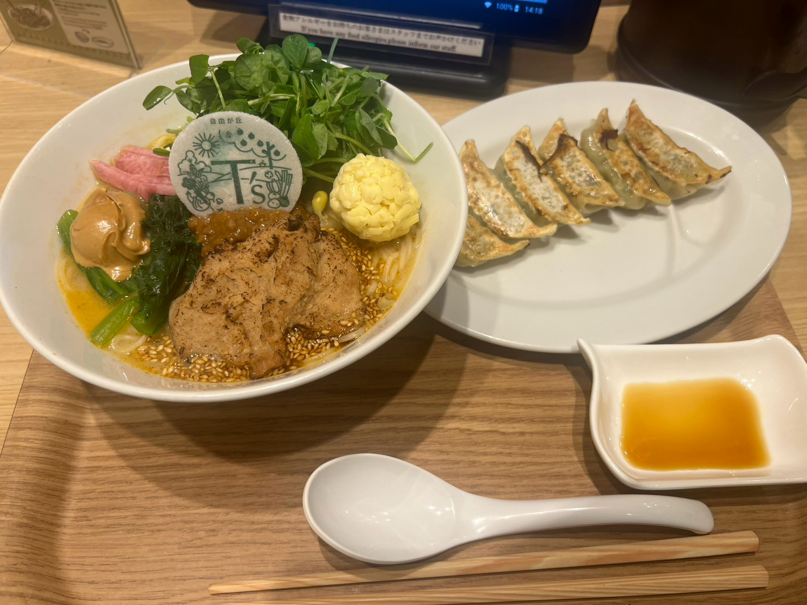
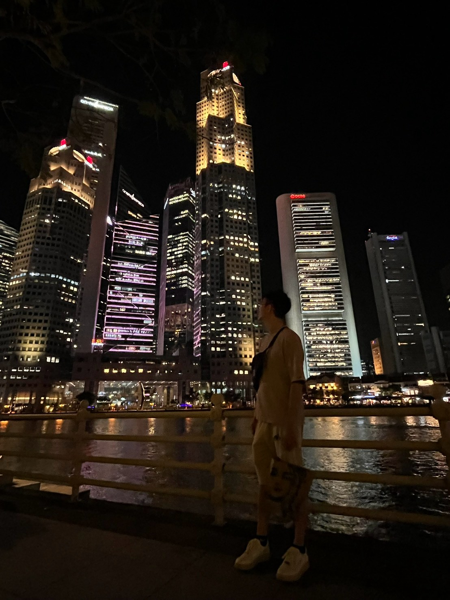

01 / CHINA
Xi’an
One of the places where history feels less like a textbook and more like part of everyday life.


A small corner of the internet
Engineer by training.
Traveler by curiosity.
Still figuring out what’s next.

Hi, I’m Howard.
I studied marine engineering, spent a few years working in the semiconductor industry, and somehow ended up becoming equally interested in traveling, music, LEGO, books, people, and figuring out what I actually want to do next.
I like trying things that are slightly outside my comfort zone — from working around EUV machines to traveling alone across cities I’ve never been to.
I like getting lost in places I’ve never been.
01 / CHINA
One of the places where history feels less like a textbook and more like part of everyday life.

.jpg)

02 / JAPAN
Asakusa, Kuramae, Tokyo Skytree, Kawaguchiko — and every delicious wrong turn in between.
03 / SINGAPORE
Museums, unforgettable food, and a little bit of Harry Potter: Visions of Magic.

Next pins on the map Chiang Mai · Yunnan · Chengdu
R&B / RAP — the kind of music that makes a long walk feel cinematic.
Especially fantasy worlds and Lord of the Rings sets. Tiny bricks, very big stories.
Fantasy literature, The Inheritance Cycle, and Murtagh on the bedside table.
Marine environment, boating, and the feeling of a horizon with no end in sight.
Exploring a new city alone, slowly enough to find the unexpected parts.
Vegetarian finds, interesting local food, and always leaving room for dessert.
Not a résumé — just a few places that shaped how I see the world.
M.S. Marine Environmental Engineering
Where an interest in the sea grew into research on marine tourism and offshore wind.
EUV Upgrade Engineer
My first chapter in semiconductor engineering — working around EUV lithography and learning what it means to work with extremely complex machines.
Etch Equipment Engineer
Another chapter in semiconductor engineering, this time working with etch equipment and learning more about life inside the industry.
STILL UNWRITTEN
Maybe a new city. Maybe a new idea. Probably both.
EXTRA PAGE PEOPLE & COMMUNITY
Before all the machines and maps, I joined international volunteer trips in Cambodia and the Philippines, took part in youth and Asia-Pacific programs, and tried my hand at an entrepreneurial summer camp. I still value the simple work of showing up, planning something together, and making space for people to connect.
A small snapshot of what’s moving through my mind these days.
TOEIC 960. Currently preparing for IELTS.
Thinking about the next destination — as usual.
Interested in living and working remotely from Chiang Mai, Bangkok, Yunnan, or Chengdu.
Someday, I want to open a real, physical cookie shop.
If you happen to share an interest in travel, technology, music, books, LEGO, food, or just figuring life out — say hi.
Send me an email